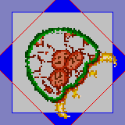
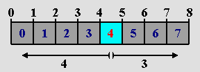
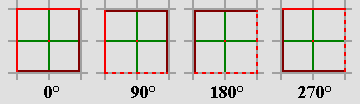
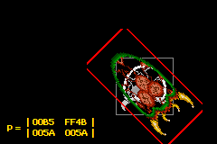
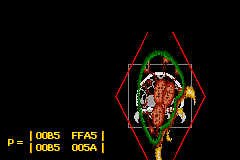
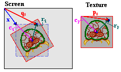
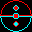
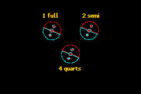

11. 仿射精灵
仿射精灵简介
本质上，仿射精灵（affine sprites） 仍是精灵。和常规精灵的区别在于，你可以在渲染阶段之前通过设置对象属性中的正确位、并填好 P 矩阵，对它们执行仿射变换（由此得名）。你可以阅读这里了解仿射变换和 P 矩阵。这是本节的必读内容，精灵与背景概览 和常规精灵 页也是。
你可能想知道这是否真的值得单独成节。简短的答案是：是的。更长的答案是：是的，因为用仿射精灵涉及的数学比常规精灵多得多，而我不想吓到那些，呃，“数学苦手”。常规精灵一节可以独立成篇，你能在对它所需的可怕数学一无所知的情况下愉快使用它。
在本章中，我们会看到如何设置对象来使用仿射变换。这本身相当容易。还会讨论你可能迟早（其实有一个几乎立刻就会）遇到的若干潜在图形问题——以及如何校正精灵的位置，使变换的原点看起来像在任意点上。并且，照例，会有演示代码阐释本章提出的各个主题。
仿射精灵初始化
要把一个常规精灵变成仿射精灵，你需要做两件事。首先，设置 OBJ_ATTR.attr0{8} 以表明这是个仿射精灵。其次，把一个 0 到 31 之间的数放进 OBJ_ATTR.attr1{8-C}。这个数指示应当使用 32 个对象仿射矩阵（OBJ_AFFINE 结构体）中的哪一个。如果你忘了，OBJ_AFFINE 长这样：
typedef struct OBJ_AFFINE
{
u16 fill0[3];
s16 pa;
u16 fill1[3];
s16 pb;
u16 fill2[3];
s16 pc;
u16 fill3[3];
s16 pd;
} ALIGN4 OBJ_AFFINE;
有符号 的 16 位成员 pa、pb、pc 和 pd 是 8.8 定点数，构成实际的矩阵，我称之为 P，与这些元素的名字对应。关于这个矩阵的更多信息，去看仿射矩阵一节。如果你还没看，现在就去看，因为我不会在这里重复。如果你只想要一个简单的“先缩放后旋转”矩阵，试试这个：对 sx 和 sy 的缩放、后跟 α 的逆时针旋转，正确的矩阵是：
注意变换的原点是精灵的 中心，而非左上角。如果你想把精灵和其他对象对齐，这值得记住，我们稍后会做。
仿射精灵的基本步骤
- 像平常一样设置一个对象：加载图形和调色板，设置
REG_DISPCNT，设置 OAM 条目。 - 设置属性 0 的第 8 位以对该对象启用仿射，并选择一个要用的对象仿射矩阵（属性 1 的 8-12 位）。
- 把那个对象仿射矩阵设为非零以外的东西，例如单位矩阵。
图形伪影
裁剪与离散化伪影
GBA 绘制精灵的过程如下：精灵在屏幕上形成一个由其尺寸定义的矩形。要绘制该区域中的屏幕像素（q）所用的纹理像素 p，通过下式计算：
| (11.1) |
其中 p0 和 q0 分别是纹理和屏幕空间中精灵的中心。下面的代码基本就是硬件所做的事；它扫描屏幕矩形（正负各半个宽和高，因为是半尺寸，以中心为参考点），计算纹理像素并绘制该颜色。
// pseudocode for affine objects
hwidth= width/2; // half-width of object screen canvas
hheight= hheight/2; // half-height of object screen canvas
for(iy=-hheight; iy<hheight; iy++)
{
for(ix=-hwidth; ix<hwidth; ix++)
{
px= (pa*ix + pb*iy)>>8; // get x texture coordinate
py= (pc*ix + pd*iy)>>8; // get y texture coordinate
color= GetPixel(px0+px, py0+py); // get color from (px,py)
SetPixel(qx0+ix, qy0+iy, color); // set color to (qx, qy)
}
}
这有两个主要后果：裁剪伪影和离散化伪影。

Fig 11.1: 一个被部分去掉尖刺的 metroid， 因为蓝色方框之外的部分被裁掉了。
裁剪伪影（clipping artifact） 是由只扫描屏幕上 矩形内 的像素造成的。但几乎任何变换都会让纹理像素超出那个矩形，矩形外的像素不会被渲染。Fig 11.1 展示了屏幕矩形（灰、蓝边）和一个旋转的对象（红边内）。超出蓝边框的部分不会被裁掉。
由于这是个明显缺陷，当然有绕开的办法：把精灵的仿射模式设为 双倍尺寸仿射（double-sized affine）（ATTR0_AFF_DBL、OBJ_ATTR.attr0{8,9}）。这会把有效 q 坐标的屏幕范围加倍，于是你能用正负一个宽和高来摆弄，而非半尺寸。这个双倍（嗯，其实是四倍）区域意味着你能安全地旋转精灵，因为到中心的最大距离是 ½√2 ≈ 0.707。当然，如果你放大到超出加倍范围之外，仍会遇到裁剪伪影。另外，注意精灵的原点移到了这个矩形的中心，所以 q0 现在离左上角整整一个精灵尺寸。
双倍尺寸标志还有第二个用途。或者也许我该说误用。如果你把它设给常规精灵，它会被隐藏。这是隐藏未用精灵的另一种方法。
第二个伪影，如果你能这么叫的话，是离散化（discretization）伪影。这比裁剪伪影更微妙，你可能甚至从没注意到它。问题在于变换实际不发生在对象的中心，而是 中心像素，向上取整。举个例子，看 fig 11.2。这里我们有从 0 到 8 的数轴；它们之间是从 0 到 7 的 8 个像素。中心的数是 4，当然。中心像素也是 4，然而它的位置其实在数字 4 和 5 的正中间。这在左边和右边的像素数之间造成了不平衡。
中心像素是变换算法的参考点，其索引是 (ix, iy) = (0, 0)。把它代入等式你会看到它在变换下不变，尽管数学上本不该如此。这对偏移量有影响，因为偏移量是从像素算的，而非位置。在 fig 11.2 中，左边有 4 个像素，右边却只有 3 个。一个会以像素 4 为中心的镜像操作，会 effectively 把精灵向右移动一个像素。
Fig 11.3 展示了这如何影响旋转。它每 8 像素画一条灰网格线，以及一个 16×16 的盒子精灵。注意开始时左右两侧都不在网格线上，因为精灵的宽和高是 16 而非 17。其他图是按 90° 增量的旋转，这给矩阵里漂亮的整圆数。旋转时，中心像素（中间的红点）保持在同一位置，其余绕它旋转，这个过程会把边缘带出精灵指定的 16×16 方框（虚线）。
|
 Fig 11.2: 像素在坐标之间，而非在坐标上。 |
 Fig 11.3: 以 90° 为增量的旋转。 |
偏移量度量的是到中心像素的距离，而非中心位置。
从仿射矩阵算出的偏移量用的是到中心像素（w/2, h/2）的距离，而非中心点。因此，与数学变换有半像素的偏差，这可能导致精灵整体出现 ±1 像素的偏移，并丢失纹理边缘。
环绕伪影
除了裁剪伪影，似乎还有另一个；一个我其实从没在任何地方见人提过的。我称之为环绕伪影。如你所知，精灵的位置给的是 9 位 x 值和 8 位 y 值，这些值在屏幕上环绕。对 x，你可以直接把它解释为 [-256, 255] 范围。对 y 值你没法真这么做，因为有符号 8 位整数的顶值是 127，那意味着你永远没法把精灵放在底部 32 行。但由于值会环绕，最终一切都能搞定。只有一个例外。
常规精灵从没任何麻烦，仿射精灵也几乎没；唯一的例外是当你有一个 64×64 或 32×64、且开启了双倍尺寸标志的仿射精灵时。这样的精灵有 128×128 的包围盒。现在有对 y > 128 的三种不同解释：
- 完全环绕：精灵顶部会显示在屏幕底部，反之亦然。
- 正数优先：把 [128, 159] 范围视为屏幕底部的指示，忽略环绕。
- 负数优先：若 y 值会让精灵部分出现在顶部，则认为它是负数，同样忽略环绕。
碰巧，GBA 用的是第三种解释。换句话说，它用
// pseudo code
if(oam.y + bbox_height > 256)
oam.y -= 256;
顺便说一下，一些较老的模拟器（VBA 和 BoycottAdvance）都用第二种解释，那可能看起来更合理，但其实是错的。如你所见，它只可能发生在 32×64 或 64×64 的双倍尺寸精灵上，即便如此你也只会在非常特定的条件下注意到它，即变换后的精灵在包围盒顶部 32 行内有可见像素时。如果你有这个问题，据我所知，让精灵显示在屏幕底部的唯一办法是暂时把高度减到 32。
一个非常（仿）酷的演示
这次我有个真正有趣的演示叫 obj_aff。它有一个普通的（盒装）metroid，可以缩放、旋转和剪切。因为这些变换被应用到矩阵的 当前 状态，你可以把不同矩阵连乘起来，得到任何可能的仿射矩阵。操作如下：
| L,R | 分别逆时针和顺时针旋转精灵。 |
|---|---|
| D-pad | 剪切精灵。 |
| D-pad+Sel | 移动精灵。 |
| A,B | 分别水平或垂直放大。 |
| A,B+Sel | 分别水平或垂直缩小。 （我的按钮用完了，所以只能这么做）。 |
| Start | 切换双倍尺寸标志。注意 a) 旋转精灵的角不再被裁掉，b) 位置偏移 半个精灵尺寸。 |
| Start+Sel | 把 P 重置为正常。 |
| Select | 控制按钮（见 A、B 和 Start）。 |
把变换并排看的有趣之处在于，你能实际看到差异，例如先缩放后旋转（A=S·R）与先旋转后缩放（A=R·S）。Fig 11.4 和 fig 11.5 展示了 45° 旋转和 2× 垂直缩放下的这个差异。另外，注意角在这里被切掉了：裁剪伪影在起作用——即便我在这里已经设置了双倍尺寸标志。
|
 Fig 11.4: obj_aff，经 S(1,2)，后 R(45°) |
 Fig 11.5: obj_aff，经 R(45°)，后 S(1,2) |
obj_aff 演示的完整源代码给在下面。它相当长，主要是因为管理可应用的不同仿射状态所需的代码量。实际处理仿射精灵的函数是 init_metr()、get_aff_new() 和 objaff_test() 游戏循环的一部分；其余基本是让整个东西运转所需的陪衬。
// obj_aff.c
#include <tonc.h>
#include <stdio.h>
#include "metr.h"
OBJ_ATTR obj_buffer[128];
OBJ_AFFINE *obj_aff_buffer= (OBJ_AFFINE*)obj_buffer;
// affine transformation constants and variables
enum eAffState
{
AFF_NULL=0, AFF_ROTATE, AFF_SCALE_X, AFF_SCALE_Y,
AFF_SHEAR_X, AFF_SHEAR_Y, AFF_COUNT
};
// 'speeds' of transformations
const int aff_diffs[AFF_COUNT]= { 0, 128, 4, 4, 4, 4 };
// keys for transformation direction
const int aff_keys[AFF_COUNT]=
{ 0, KEY_L, KEY_SELECT, KEY_SELECT, KEY_RIGHT, KEY_UP };
int aff_state= AFF_NULL, aff_value= 0;
void init_metr()
{
// Places the tiles of a 4bpp metroid sprite into LOW obj VRAM
memcpy32(tile_mem[4], metr_boxTiles, metr_boxTilesLen/4);
memcpy32(pal_obj_mem, metrPal, metrPalLen/4);
// Set up main metroid
obj_set_attr(obj_buffer,
ATTR0_SQUARE | ATTR0_AFF, // Square affine sprite
ATTR1_SIZE_64 | ATTR1_AFF_ID(0), // 64x64, using obj_aff[0]
0 | 0); // palbank 0, tile 0
obj_set_pos(obj_buffer, 96, 32);
obj_aff_identity(&obj_aff_buffer[0]);
// Set up shadow metroid
obj_set_attr(&obj_buffer[1],
ATTR0_SQUARE | ATTR0_AFF, // Square affine sprite
ATTR1_SIZE_64 | ATTR1_AFF_ID(31), // 64x64, using obj_aff[0]
ATTR2_PALBANK(1) | 0); // palbank 1, tile 0
obj_set_pos(&obj_buffer[1], 96, 32);
obj_aff_identity(&obj_aff_buffer[31]);
oam_update_all();
}
int get_aff_state()
{
if(key_is_down(KEY_L | KEY_R))
return AFF_ROTATE;
if(key_is_down(KEY_A))
return AFF_SCALE_X;
if(key_is_down(KEY_B))
return AFF_SCALE_Y;
if(key_is_down(KEY_LEFT | KEY_RIGHT))
return AFF_SHEAR_X;
if(key_is_down(KEY_UP | KEY_DOWN))
return AFF_SHEAR_Y;
return AFF_NULL;
}
void get_aff_new(OBJ_AFFINE *oa)
{
int diff= aff_diffs[aff_state];
aff_value += (key_is_down(aff_keys[aff_state]) ? diff : -diff);
switch(aff_state)
{
case AFF_ROTATE: // L rotates left, R rotates right
aff_value &= SIN_MASK;
obj_aff_rotate(oa, aff_value);
break;
case AFF_SCALE_X: // A scales x, +SELECT scales down
obj_aff_scale_inv(oa, (1<<8)-aff_value, 1<<8);
break;
case AFF_SCALE_Y: // B scales y, +SELECT scales down
obj_aff_scale_inv(oa, 1<<8, (1<<8)-aff_value);
break;
case AFF_SHEAR_X: // shear left and right
obj_aff_shearx(oa, aff_value);
break;
case AFF_SHEAR_Y: // shear up and down
obj_aff_sheary(oa, aff_value);
break;
default: // shouldn't happen
obj_aff_identity(oa);
}
}
void objaff_test()
{
OBJ_ATTR *metr= &obj_buffer[0], *shadow= &obj_buffer[1];
OBJ_AFFINE *oaff_curr= &obj_aff_buffer[0];
OBJ_AFFINE *oaff_base= &obj_aff_buffer[1];
OBJ_AFFINE *oaff_new= &obj_aff_buffer[2];
int x=96, y=32;
int new_state;
// oaff_curr = oaff_base * oaff_new
// oaff_base changes when the aff-state changes
// oaff_new is updated when it doesn't
obj_aff_identity(oaff_curr);
obj_aff_identity(oaff_base);
obj_aff_identity(oaff_new);
while(1)
{
key_poll();
// move sprite around
if( key_is_down(KEY_SELECT) && key_is_down(KEY_DIR) )
{
// move
x += 2*key_tri_horz();
y += 2*key_tri_vert();
obj_set_pos(metr, x, y);
obj_set_pos(shadow, x, y);
new_state= AFF_NULL;
}
else // or do an affine transformation
new_state= get_aff_state();
if(new_state != AFF_NULL) // no change
{
if(new_state == aff_state) // increase current transformation
{
get_aff_new(oaff_new);
obj_aff_copy(oaff_curr, obj_aff_base, 1);
obj_aff_postmul(oaff_curr, oaff_new);
}
else // switch to different transformation type
{
obj_aff_copy(oaff_base, oaff_curr, 1);
obj_aff_identity(oaff_new);
aff_value= 0;
}
aff_state= new_state;
}
// START: toggles double-size flag
// START+SELECT: resets obj_aff to identity
if(key_hit(KEY_START))
{
if(key_is_down(KEY_SELECT))
{
obj_aff_identity(oaff_curr);
obj_aff_identity(oaff_base);
obj_aff_identity(oaff_new);
aff_value= 0;
}
else
{
metr->attr0 ^= ATTR0_DBL_BIT;
shadow->attr0 ^= ATTR0_DBL_BIT;
}
}
vid_vsync();
// we only have one OBJ_ATTR, so update that
obj_copy(obj_mem, obj_buffer, 2);
// we have 3 OBJ_AFFINEs, update these separately
obj_aff_copy(obj_aff_mem, obj_aff_buffer, 3);
// Display the current matrix
tte_printf("#{es;P:8,136}P = "
"#{y:-7;Ps}| %04X\t%04X#{Pr;x:72}|"
"#{Pr;y:12}| %04X\t%04X#{Pr;p:72,12}|",
(u16)oaff_curr->pa, (u16)oaff_curr->pb,
(u16)oaff_curr->pc, (u16)oaff_curr->pd);
}
}
int main()
{
REG_DISPCNT= DCNT_BG0 | DCNT_OBJ | DCNT_OBJ_1D;
oam_init(obj_buffer, 128);
init_metr();
tte_init_chr4_b4_default(0, BG_CBB(2)|BG_SBB(28));
tte_init_con();
tte_set_margins(8, 128, 232, 160);
objaff_test();
return 0;
}
把 metroid 变成仿射精灵全在 init_metr() 里完成。既然你现在看过多次如何设置位，应该能理解。话虽如此，请注意我把第一个 OBJ_AFFINE（精灵用的那个）填成了单位矩阵 I。如果你让它全零，你得到的只会是一个 64×64 像素的均匀色矩形。记住 P 包含像素偏移；如果全为零，就没有偏移，整个东西用的都是原点的颜色。本质上，精灵被放大到了无穷。
坦白说，在 oam_init() 之后调用 obj_aff_identity() 其实没必要，因为那个函数也初始化了矩阵。不过，你仍需要意识到潜在问题。
那是设置，现在讲讲这个演示怎么做到它所做的。在任何时刻，你都会有一些变换矩阵 P。按一个（或几个）按钮，就会通过矩阵乘法对当前状态执行一个小的变换。
其中 D 是小的旋转（R）、缩放（S）或剪切（H），或空操作（I）。然而，这里有个小障碍。这在理论上很好，但在 实践 中不行，因为定点数矩阵乘法会非常非常快地导致不可接受的舍入误差。幸运的是，所有这些变换都有个方便的性质：
也就是说，多个小变换和作为一个大变换一样。你只需跟踪当前所选变换（变量 aff_state，在 get_aff_state() 里）、修改状态变量（aff_value），然后计算完整变换矩阵（get_aff_new()）并应用它（用 obj_aff_postmul()）。当选了不同的变换类型，当前矩阵被保存，状态值被重置，整个东西以该状态继续，直到又选了另一个。大部分代码用于跟踪这些变更；它不漂亮，但能完成任务。
非中心参考点与对象组合

Fig 11.6: 对象绕非中心点旋转。
如前所述，仿射精灵总是用它们的中心作为仿射原点，但有时你可能想用别的东西来绕其旋转——用另一个点作为参考点。现在，你其实做不到这一点，但你能让它 看起来 像是能做到。为此，我需要解释一些我称之为锚定（anchoring）的东西。锚（anchor） 是应当保持“固定”的位置；纹理（这里是对象）被锚定到屏幕的地方。
对于锚定，你其实需要每个所用坐标空间一组坐标。这里就是两个：纹理空间和屏幕空间。我们称这些点为 p0 和 q0。它们实际 从 哪里指向基本无关紧要，但为方便起见我们用屏幕和纹理原点。这些点只是开始。总共，完整过程我们需要考虑 七 个向量，它们都在 fig 11.6 中描绘。它们的含义在下面的表中解释。
| point | description |
|---|---|
| p0, q0 | 纹理和屏幕空间中的锚。 |
| cp, cq | 纹理和屏幕空间中的对象中心。结合对象尺寸 s=(w,h)，我们有 cp=½s 和 cq=ms，其中 m 是 ½ 或 1，取决于双倍尺寸标志。 |
| rp, rq | 对象中心与锚之间的距离。按定义， rp = P·rq |
| x | 期望的对象坐标。 |
是的，这是一大堆向量，但有趣的是，大多数已经已知。中心点（cp 和 cq）可从对象尺寸和双倍尺寸状态推导，锚是预先已知的（因为它们是输入值），而 rp 和 rq 符合仿射变换的一般等式 eq 11.2，所以这把两个空间联系了起来。剩下要做的就是把这组等式写出来并求解。
| (11.2) |
三个方程、三个未知数，意味着可解。我不会贴出整个推导，因为那并不难；你在 eq 11.3 中看到的是以最有用形式给出的结果。
| (11.3) |
右边有三个独立向量，其中两个是输入的一部分，一个用于双倍尺寸模式的缩放标志，以及求逆的仿射矩阵。是的，我说了求逆。这是因为把对象放到正确位置的大部分平移发生在屏幕空间。用它的整个项只是 rq，即在纹理空间里锚与中心之差的变换结果，你最后校正需要它。
现在，这个矩阵求逆意味着两件事。首先，你可能得设置 两 个矩阵：仿射矩阵本身，和它的逆。对一般矩阵，这可能要花点时间，尤其考虑到如果你想要缩放，就得在某处做除法。其次，因为你矩阵元素只有 16 位，逆不会是 精确的 逆，意味着精确对齐对象会困难，如果并非不可能的话。这基本是硬件本身保证的，我稍后会回到这一点。现在，我们来看一个实现 eq 11.3 的函数，针对先双向缩放后旋转的情况。
// === in tonc_types.h ===
// This is the same struct that's used in BgAffineSet,
// where it is called BGAffineSource, even though its uses go
// beyond just backgrounds.
typedef struct tagAFF_SRC_EX
{
s32 tex_x, tex_y; // vector p0: anchor in texture space (.8f)
s16 scr_x, src_y; // vector q0: anchor in screen space (.0f)
s16 sx, sy; // scales (Q.8)
u16 alpha; // CCW angle ( integer in [0,0xFFFF] )
} AFF_SRC_EX;
// === in tonc_core.c ===
// Usage: oam_sizes[shape][size] is (w,h)
const u8 oam_sizes[3][4][2]=
{
{ { 8, 8}, {16,16}, {32,32}, {64,64} },
{ {16, 8}, {32, 8}, {32,16}, {64,32} },
{ { 8,16}, { 8,32}, {16,32}, {32,64} },
};
// === in tonc_obj_affine.c ===
void obj_rotscale_ex(OBJ_ATTR *obj, OBJ_AFFINE *oa, AFF_SRC_EX *asx)
{
int sx= asx->sx, sy= asx->sy;
int sina= lu_sin(asx->alpha)>>4, cosa= lu_cos(asx->alpha)>>4;
// (1) calculate P
oa->pa= sx*cosa>>8; oa->pb= -sx*sina>>8;
oa->pc= sy*sina>>8; oa->pd= sy*cosa>>8;
// (2) set-up and calculate A= P^-1
// sx = 1/sx, sy = 1/sy (.12f)
sx= Div(1<<20, sx);
if(sx != sy)
sy= Div(1<<20, sy);
else
sy= sx;
FIXED aa, ab, ac, ad; // .8f
aa= sx*cosa>>12; ab= sy*sina>>12;
ac= -sx*sina>>12; ad= sy*cosa>>12;
// (3) get object size
sx= oam_sizes[obj->attr0>>14][obj->attr1>>14][0];
sy= oam_sizes[obj->attr0>>14][obj->attr1>>14][1];
// (4) calculate dx = q0 - ms - A*(p0-s/2)
int dx= asx->src_x, dy= asx->src_y; // .0f
if(obj->attr0&ATTR0_DBL_BIT)
{ dx -= sx; dy -=sy; }
else
{ dx -= sx>>1; dy -= sy>>1; }
sx= asx->tex_x - (sx<<7); // .8f
sy= asx->tex_y - (sy<<7); // .8f
dx -= (aa*sx + ab*sy)>>16; // .0 - (.8f*.8f/.16f)
dy -= (ac*sx + ad*sy)>>16; // .0 - (.8f*.8f/.16f)
// (5) update OBJ_ATTR
obj_set_pos(obj, dx, dy);
}
AFF_SRC_EX 结构体和 oam_sizes 数组是做定位的函数 obj_rotscale_ex() 的辅助实体。它创建仿射矩阵（pa-pd），并执行 eq 11.3 的所有必要步骤，即创建逆矩阵 A（aa-ad）、计算所有偏移并校正尺寸，最后更新 OBJ_ATTR。注意定点数精度变化很大，所以经常注释这一点很重要。
如我所说，这不是特别快的函数；它大约花一个扫描线的周期数。如果你需要更快，我还有一个 Thumb 汇编版本，约快 40%。
仿射对象组合演示

Fig 11.7: oacombo 用的对象。
本节的演示 oacombo 会显示本质上同一个对象的三个版本，即 fig 11.7 里的圆。它们之间的区别在于如何构造：
- 1 个 32×32p 对象，整圆。
- 2 个 32×16p 对象，两个半圆。
- 4 个 16×16p 对象，四个四分之一圆。
这个演示的要点是旋转它们并定位组合精灵（对象组合（object combos））的组件，就好像它们是单个精灵。这需要非中心锚，因此与本节的主题契合得很好。为了管理组合，我用了下面这个结构体。
typedef struct OACOMBO
{
OBJ_ATTR *sub_obj; // obj pointer for sub-objects
POINT *sub_pos; // Local sub-object coords (.8f)
int sub_count; // Number of sub-objects
POINT pos; // Global position (.8f)
POINT anchor; // Local anchor (.8f)
s16 sx, sy; // scales (.8f)
u16 alpha; // CCW angle
} OACOMBO;
每个组合由 sub_count 个对象组成；sub_oe 是指向存储这些对象的数组的指针，sub_pos 是指向这些对象（左上）坐标列表的指针，相对于整个精灵的左上。这个全局位置在 pos 里。锚（在 anchor 里）也相对于这个位置。全局屏幕锚会在 pos+anchor，子对象 ii 的纹理锚在 anchor-sub_pos[ii]。
旋转会绕圆心进行，所以锚是 (16,16)。或者更确切地说 (16,16)*256，因为它们是 .8 定点数，但现在不重要。对整圆，这会是对象的中心，但仍需要为双倍尺寸标志校正。对其他组合，锚 不会 在它们子对象的中心。
因为子对象共享同一个 P 矩阵，一直重算它是浪费，所以我用一个特别为 OACOMBO 结构体改写的版本 oac_rotscale()。代码基本一样。七个对象的数据在 obj_data[] 数组里，并在初始化函数中复制到 obj_buffer。虽然魔术数字（比如用十六进制表示 OAM 属性）通常很糟，但同样真实的是它们其实不是这个故事的核心，而为所有对象用“恰当”方式初始化可能反而弊大于利……这次。不过锚和参考点我还是用 #define，因为它们在代码其余部分出现多次。
// oacombo.c
#include <stdio.h>
#include <tonc.h>
#include "oac_gfx.h"
#define AX (16<<8) // X-anchor
#define AY (16<<8) // Y-anchor
#define X0 120 // base X
#define Y0 36 // base Y
// === GLOBALS ========================================================
OBJ_ATTR obj_buffer[128];
OBJ_AFFINE *obj_aff_buffer= (OBJ_AFFINE*)obj_buffer;
// Obj templates
const OBJ_ATTR obj_data[7]=
{
// obj[0] , oaff[0]: 1 full 32x32p double-affine circle
{ 0x0300, 0x8200, 0x0000, 0x0000 },
// obj[1-2], oaff[1]: 2 32x16p double-affine semi-circles
{ 0x4300, 0x8200, 0x0000, 0x0000 },
{ 0x4300, 0x8200, 0x0008, 0x0000 },
// obj[3-7], oaff[1]: 4 16x16p double-affine quarter-circles
{ 0x0300, 0x4400, 0x0010, 0x0000 },
{ 0x0300, 0x4400, 0x0014, 0x0000 },
{ 0x0300, 0x4400, 0x0018, 0x0000 },
{ 0x0300, 0x4400, 0x001C, 0x0000 },
};
POINT sub_pos[7]=
{
{0,0},
{0,0},{0,AY},
{0,0},{AX,0}, {0,AY},{AX,AY},
};
OACOMBO oacs[3]=
{
// full 32x32p double-affine circle
{ &obj_buffer[0], &sub_pos[0], 1,
{(X0-48)<<8, Y0<<8}, {AX, AY}, 256, 256, 0 },
// 2 32x16p double-affine semi-circles
{ &obj_buffer[1], &sub_pos[1], 2,
{(X0+16)<<8, Y0<<8}, {AX, AY}, 256, 256, 0 },
// 4 16x16p double-affine quarter-circles
{ &obj_buffer[3], &sub_pos[3], 4,
{(X0-16)<<8, (Y0+40)<<8}, {AX, AY}, 256, 256, 0 },
};
void oac_rotscale(OACOMBO *oac)
{
int alpha= oac->alpha;
int sx= oac->sx, sy= oac->sy;
int sina= lu_sin(alpha)>>4, cosa= lu_cos(alpha)>>4;
// --- create P ---
OBJ_AFFINE *oaff=
&obj_aff_buffer[BF_GET(oac->sub_obj->attr1, ATTR1_AFF_ID)];
oaff->pa= cosa*sx>>8; oaff->pb= -sina*sx>>8;
oaff->pc= sina*sy>>8; oaff->pd= cosa*sy>>8;
// --- create A ---
// sx = 1/sx, sy = 1/sy (.12f)
sx= Div(1<<20, sx);
if(sx != sy)
sy= Div(1<<20, sy);
else
sy= sx;
FIXED aa, ab, ac, ad;
aa= sx*cosa>>12; ab= sy*sina>>12; // .8f
ac= -sx*sina>>12; ad= sy*cosa>>12; // .8f
int ii;
OBJ_ATTR *obj= oac->sub_obj;
POINT *pt= oac->sub_pos;
// --- place each sub-object ---
for(ii=0; ii<oac->sub_count; ii++)
{
int dx, dy; // all .8f
sx= oam_sizes[obj->attr0>>14][obj->attr1>>14][0]<<7;
sy= oam_sizes[obj->attr0>>14][obj->attr1>>14][1]<<7;
dx= oac->pos.x+oac->anchor.x - sx; // .8f
dy= oac->pos.y+oac->anchor.y - sy; // .8f
if(obj->attr0&ATTR0_DBL_BIT)
{ dx -= sx; dy -= sy; }
sx= oac->anchor.x - pt->x - sx;
sy= oac->anchor.y - pt->y - sy;
dx -= (aa*sx + ab*sy)>>8; // .8f
dy -= (ac*sx + ad*sy)>>8; // .8f
BF_SET(obj->attr0, dy>>8, ATTR0_Y);
BF_SET(obj->attr1, dx>>8, ATTR1_X);
obj++; pt++;
}
}
void init_main()
{
memcpy32(pal_obj_mem, oac_gfxPal, oac_gfxPalLen/4);
memcpy32(tile_mem[4], oac_gfxTiles, oac_gfxTilesLen/4);
// init objs and obj combos
oam_init();
memcpy32(obj_buffer, obj_data, sizeof(obj_data)/4);
REG_DISPCNT= DCNT_BG0 | DCNT_OBJ | DCNT_OBJ_1D;
tte_init_chr4_b4_default(0, BG_CBB(2)|BG_SBB(28));
tte_init_con();
// Some labels
tte_printf("#{P:%d,%d}1 full #{P:%d,%d}2 semi #{P:%d,%d}4 quarts",
X0-48, Y0-16, X0+20, Y0-16, X0-20, Y0+74);
}
int main()
{
init_main();
int ii, alpha=0;
while(1)
{
vid_vsync();
key_poll();
alpha -= 128*key_tri_shoulder();
for(ii=0; ii<3; ii++)
{
oacs[ii].alpha= alpha;
oac_rotscale(&oacs[ii]);
}
oam_copy(oam_mem, obj_buffer, 128);
}
return 0;
}

Fig 11.8: 运行中的 oacombo。 注意缝隙。
右边 Fig 11.8 是演示的截图。有三点要指出。首先，三个对象确实都大致是同一形状，意味着函数（们）有效。但这其实没什么可怀疑的，因为它只是遵循数学。第二点是半圆形和四分之一圆组合里似乎有缝隙。如果你自己玩一阵演示，会看到这些缝隙似乎随机地出现和消失。与此同时，整圆对象一直看着没问题。嗯，大致是。
造成这个的原因与第三点有关。比较三个圆的像素簇，特别是每个圆里较小的圆。注意即使它们用 完全 相同的 P 矩阵，它们的排列却不同！原因是，虽然我们把子对象摆放成组成一个更大的对象，但每个子对象的像素映射 仍 从它们的中心开始。这意味着决定给定屏幕像素用哪个源像素的累积偏移会不同，因此你会得到不同的画面，在接缝处尤其明显。
如果这有点难想象，试试这个：打开一个位图编辑器，画一条单宽度的对角线。现在把它复制一份并偏移 (1, 1) 像素。你会得到两条细线中间有缝，而非一条粗线。这里发生的是同样的事。
重点是，让仿射对象在接缝处完美对齐几乎不可能。好吧，我假定在简单情况下你可能侥幸成功，而且你可以花时间写代码校正纹理以正确对齐，但通常你应该预期约一个像素的硬件不确定性。这在非中心参考点处会是个可见效果，它会有些许抖动，或在仿射对象组合的接缝处，你会看到缝隙。前者的简单解决办法是重新排布对象的图块，使参考点不在中心（听起来廉价我知道，但效果绝佳），或者让那里是透明像素——毕竟，如果它是看不见的，你就注意不到有什么在抖。这对组合也有效，组合或许还能受益于让对象稍微重叠，虽然我还没试过。通过在计算里加舍入项 可能 能获得一些精度，但我直觉它作用不大。不过尽管试。
别让这些关于仿射对象陷阱的谈论太过困扰你，我只是想指出它可能没你希望的那么简单。所以它们带着几根线，但它们仍是很酷的效果。在设计使用它们的游戏时，把本章提到的问题放在心上，并确保你的数学是对的，这也许能为你省下日后大量工作。